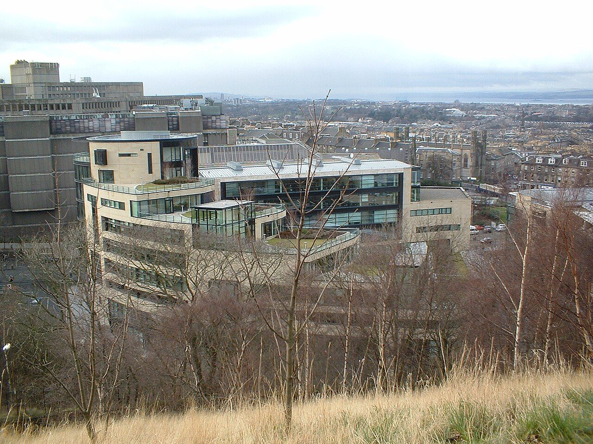

Photo : Delta-NC from the english wikipedia, Public domain — Wikimedia Commons. Bâtiment de Rockstar North à Édimbourg.
Une grève chez Rockstar Games n'est pas exclue
EN BREF
- Fin octobre 2025 : 34 salariés licenciés au Royaume-Uni et au Canada
- 30 juin 2026 : le syndicat IWGB demande sa reconnaissance officielle
- Une grève est évoquée en cas de refus
- Depuis le 10 septembre 2026 : procès à Glasgow
Les salariés de Rockstar Games envisagent une action de grève si le studio ne répond pas favorablement à leur demande de reconnaissance syndicale. Le syndicat IWGB a officiellement déposé cette demande le 30 juin 2026.
D'où vient le conflit ?
Fin octobre 2025, Rockstar a licencié 34 personnes dans ses studios britanniques et canadiens : 31 membres de l'IWGB et 3 salariés basés au Canada. Les employés y voient une tentative de « union busting » (casser un syndicat naissant). Rockstar affirme de son côté qu'ils ont été renvoyés pour avoir partagé des informations confidentielles sur un serveur Discord.
Chronologie
- 30 octobre 2025 — licenciements.
- 30 juin 2026 — demande de reconnaissance syndicale de l'IWGB ; une grève est évoquée.
- 10 septembre 2026 — ouverture du procès devant le tribunal du travail de Glasgow, prévu jusqu'au 16 octobre.
Un risque pour la sortie ?
À ce stade, aucun lien n'est établi entre ce conflit et un éventuel report de GTA 6. Aucune grève n'a été déclenchée à ce jour et Rockstar n'a pas réagi publiquement à la demande de l'IWGB. Pour la suite, voir Procès de Glasgow.